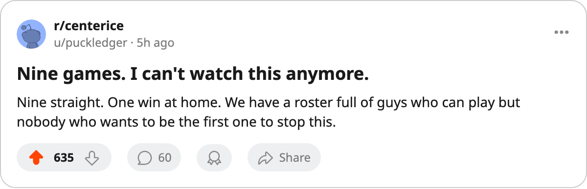

Numbers Game: Chicago Has Lost 9 Straight and Goes 1-8 at Home
The Blackhawks sit 14th in the West with 10 points through 15 games. The losing streak reached 9 on Sunday night.
 Ray CallumSenior correspondent · Home Ice Network
Ray CallumSenior correspondent · Home Ice NetworkChicago lost 2-1 in overtime at  Florida Panthers on November 11, and the streak hit 9. The Blackhawks are 2-8-4 through 15 games, 10 points, 31 goals for and 47 against. The 1-8 home record is the worst split in the league.
Florida Panthers on November 11, and the streak hit 9. The Blackhawks are 2-8-4 through 15 games, 10 points, 31 goals for and 47 against. The 1-8 home record is the worst split in the league.
They have not won since before the last edition ran. The last 10 games read: 6 losses, 2 overtime losses, 1 overtime win, 1 loss. The only overtime win in that stretch came against a club that is now last in its own division.
What the injuries cost
 Chicago Blackhawks carry 7 injury spells and 52 days lost. Deron Quint75 (groin) is out until November 24. Burke Henry68 (hand) is out until November 17. Neither man is a top-pairing defenseman on paper, but the club has no depth behind them.
Chicago Blackhawks carry 7 injury spells and 52 days lost. Deron Quint75 (groin) is out until November 24. Burke Henry68 (hand) is out until November 17. Neither man is a top-pairing defenseman on paper, but the club has no depth behind them.
Ari Ahonen87 has started 9 of 15,  Jocelyn Thibault87 8. Neither has had enough starts to settle in. The 47 goals against in 15 games lead the Central Division.
Jocelyn Thibault87 8. Neither has had enough starts to settle in. The 47 goals against in 15 games lead the Central Division.
| Club | GP | W | L | OTL | Pts | Home | Away |
|---|---|---|---|---|---|---|---|
| Chicago Blackhawks | 15 | 2 | 8 | 4 | 10 | 1-8 | 2-4 |
 Phoenix Coyotes Phoenix Coyotes | 16 | 3 | 12 | 0 | 8 | 2-4 | 2-8 |
Phoenix has fewer points (8 in 16 games) but a worse record. Chicago has the worse home split and the longer losing streak.
The schedule offers no mercy
The Blackhawks host  Washington Capitals on November 15, then play
Washington Capitals on November 15, then play  Nashville Predators on November 17, then visit
Nashville Predators on November 17, then visit  Edmonton Oilers on November 19. Washington is 4-7-3 but has won 1 of their last 2. Nashville is 5-3-2 and 3rd in the Central. The streak is more likely to reach double digits before it breaks.
Edmonton Oilers on November 19. Washington is 4-7-3 but has won 1 of their last 2. Nashville is 5-3-2 and 3rd in the Central. The streak is more likely to reach double digits before it breaks.
Chicago scored 1 goal on November 11, 2 on November 9 (a 3-2 loss), and 2 on November 8 (a 3-2 loss). They are not being outshot badly. They are losing close games and not winning them.
